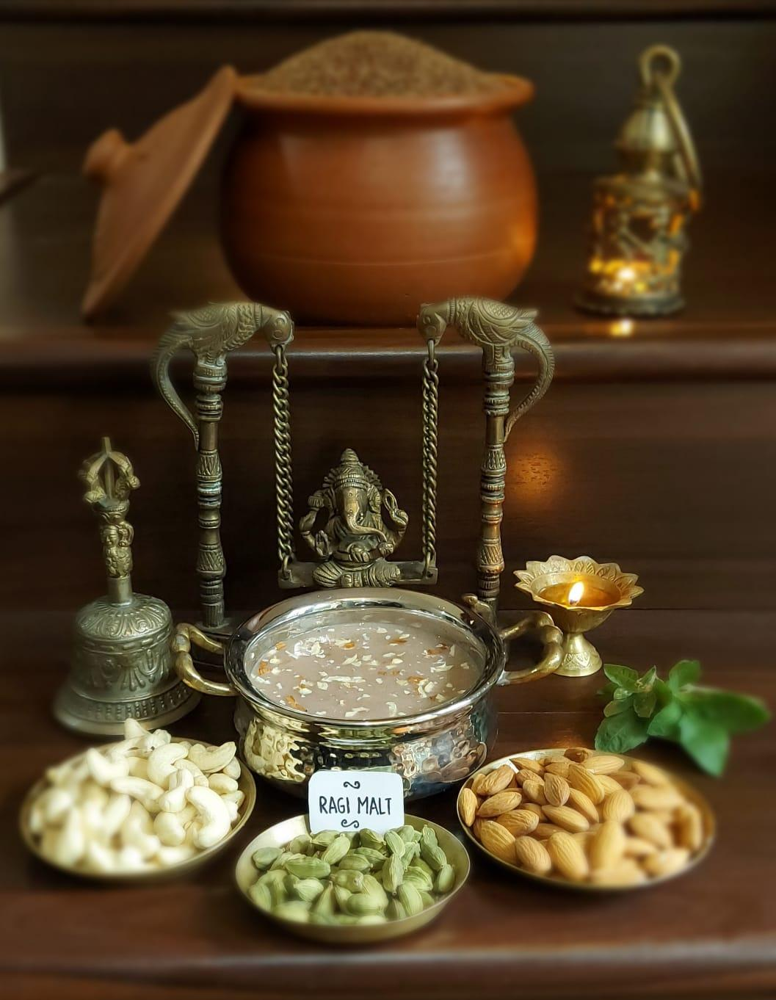
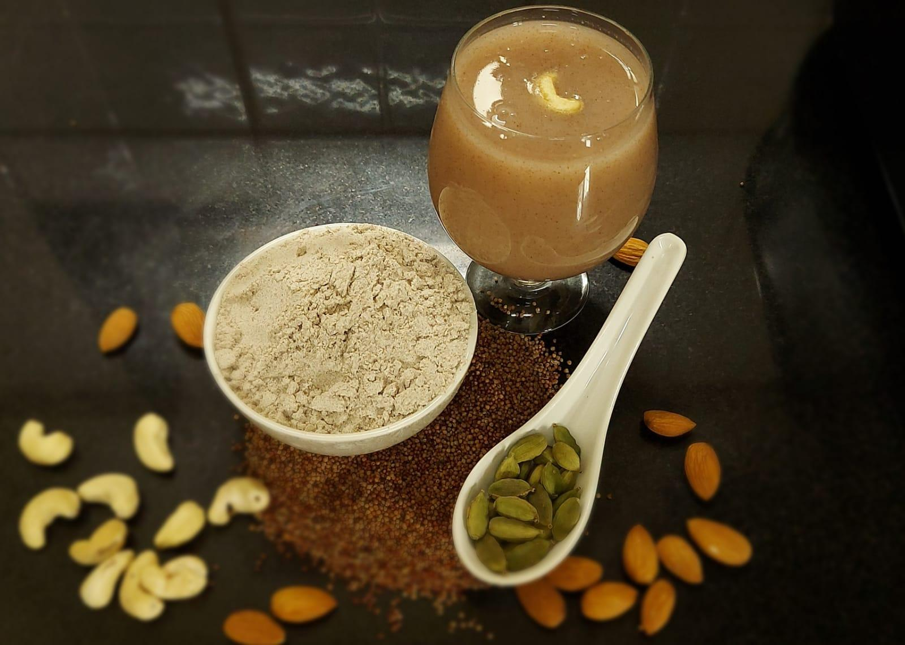
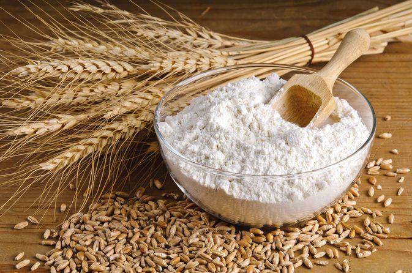
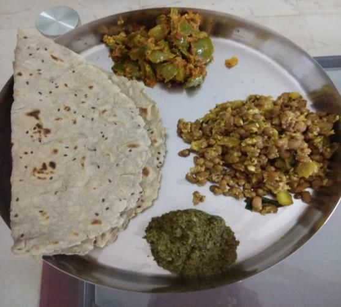
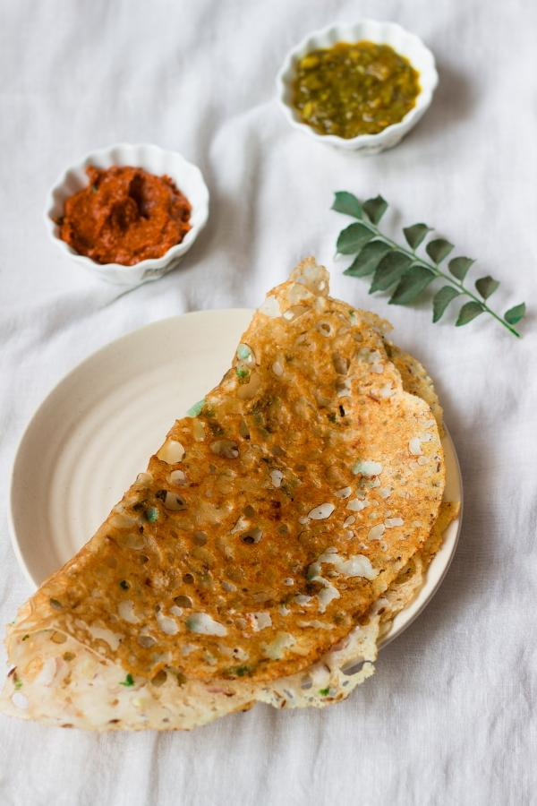
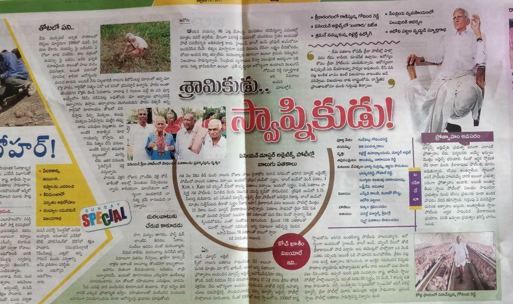

01
MORNING FAVOURITE
Ragi Malt
Sprouted ragi, cashews, almonds and cardamom — a warm, comforting traditional drink.

Traditional Indian grains, homemade with care and shaped for the way we live today.
EXPLORE PRODUCTS →
AyurdhA grew from Saritha's own family food habits — familiar grains, simple preparations and the belief that good food should fit naturally into everyday life.
READ SARITHA'S STORY →It began with a childhood morning ritual and grew into a wish to make traditional foods easier for today's families to enjoy.
ROOTED IN FAMILY • MADE FOR TODAYThree everyday favourites built around grains that have long been part of Indian kitchens.
Sprouted ragi, cashews, almonds and cardamom — a warm, comforting traditional drink.

02Barley with cashews, almonds and cardamom, also suitable for simple homemade payasam or kheer.

03Jowar, bajra, makai, unpolished rice, rajma and soya — ready for a quick everyday meal.
Pack sizes and prices are being finalised. Use the enquiry cart to ask Saritha for current options.
I was 23 when I began following my mother's food habits. What began as something familiar slowly became a way of life — and later, something I wanted to share with other families.
My grandfather's love for Ragi Malt and his active years in Masters Athletics remain one of the memories behind AyurdhA.
READ THE FULL STORY →I still remember my childhood mornings. After brushing our teeth, Ragi Malt was the first thing served to my siblings and me. I never really preferred tea or coffee over it. I am grateful that I could pass the same habit on to my own children.
My paternal grandmother lived to 94. My father, now 70, continues to be an example of an active life. In our home, ragi, jowar, bajra and makai were familiar parts of everyday meals.
On my mother's side, my grandfather lived to 89. Even in his seventies, he took part in Masters Athletics and competed internationally. Ragi Malt was his first morning drink. That memory has stayed with me.
During COVID, I started thinking about how traditional grains could be made easier to bring back into busy routines. That thought became AyurdhA.


Small-batch homemade products inspired by traditional Indian grains and family food habits.
Preparation guidance from the AyurdhA product notes.
Mix 2 spoons (15g) with water, stir into the boiling portion and simmer. Milk, jaggery, sugar or salt can be added to taste.
Mix 8g powder with water and add to boiling milk, or use water for a vegan preparation. Sweeten to taste.
Mix one cup with water, chopped vegetables or herbs, jeera and salt. Rest briefly, then cook both sides.
Ask about products, pack sizes, pricing or simply say hello to Saritha.